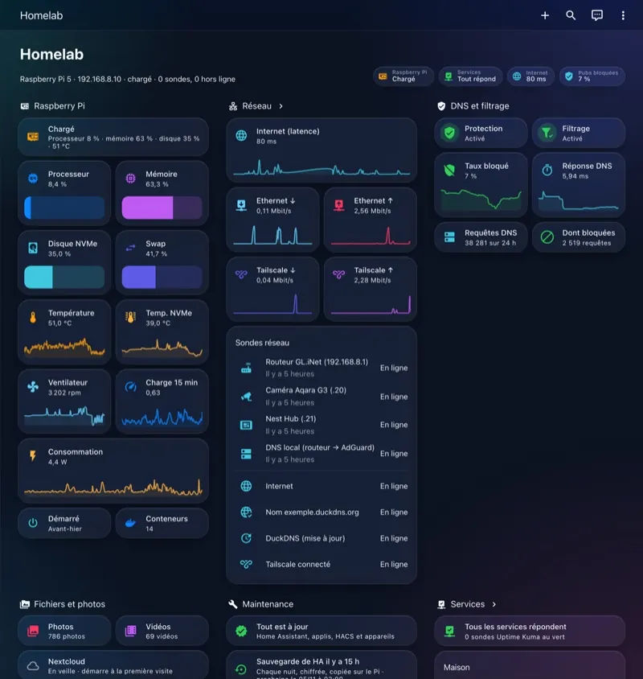

Qui je suis
Un seul interlocuteur, du devis au suivi
Je m’appelle Antonin. Je suis étudiant en licence MPCI (mathématiques, physique, chimie et informatique) à Aix-Marseille Université, et je m’intéresse aux serveurs et à la domotique depuis plusieurs années.
Antonin Chenavaz
Étudiant en licence MPCI à Aix-Marseille Université
Mon installation, chez moi, en novembre 2026 :
- objets connectés
- une dizaine
- technologies réunies : Matter, Thread, Zigbee, HomeKit
- 4
- automatismes
- 14
- essai automatique de restauration des sauvegardes
- 1 par mois
Mon parcours
Chez moi, Home Assistant fait fonctionner ensemble des objets de quatre technologies différentes, dans un tableau de bord que j’ai dessiné moi-même. Mes sauvegardes partent chaque nuit hors de chez moi, chiffrées, et un essai complet de restauration se lance automatiquement chaque mois.
C’est en montant cette installation, et en réparant ses pannes, que j’ai appris ce que je vous propose. Je travaille seul, à côté de mes études : je prends donc peu de foyers à la fois, et vous avez affaire à moi du premier échange au suivi.

Un exemple réel
Mon installation, en vrai
Elle me sert de référence : tout ce que je propose, je l’ai d’abord installé, réglé et dépanné chez moi.
Quelques automatismes qui tournent chez moi
- Un appui long sur un bouton lance « Bonne nuit » et éteint les lumières.
- Le soir, la lumière d’accueil s’allume quand la porte d’entrée s’ouvre.
- Un réveil lumineux les jours de cours.
- Une alerte sur mon téléphone si la porte d’entrée reste ouverte plus de deux minutes.
- Le serveur Matter redémarre tout seul si une lampe ou une prise ne répond plus.
Et pour que ça dure
- Une sauvegarde chiffrée part chaque nuit hors de chez moi.
- Chaque mois, un essai complet de restauration se lance automatiquement.
- Seules les alertes qui demandent une action sonnent sur mon téléphone.
Sur GitHub, je documente mon serveur personnel : réseau, sauvegardes et sécurité. La configuration de ma domotique reste privée, et chez un client j’installe un boîtier Home Assistant Green, plus simple.
Les limites de mon travail
- Je ne réalise aucun travail sur l’installation électrique : pas de câblage, pas d’interrupteur ni de module encastré, pas d’intervention sur le tableau. Si votre projet en demande, ces travaux doivent être confiés à un électricien qualifié, que vous choisissez et payez directement.
- Je ne fais pas de télésurveillance : les alertes vont sur votre téléphone et à des personnes que vous choisissez. Je ne surveille pas votre logement, je ne reçois pas vos alertes et je n’interviens pas en cas d’alarme.
- Je n’installe pas de caméra.
- Je ne vends pas de matériel : vous l’achetez à votre nom.
- Je ne me connecte à votre installation qu’avec votre accord écrit, et vous pouvez couper cet accès à tout moment.
Mes disponibilités
- Je réponds aux demandes par e-mail, sous 2 jours ouvrés.
- J’interviens surtout le samedi et pendant les vacances universitaires. Je vous propose une date par e-mail.
- Je me déplace en transports en commun, jusqu’à 45 minutes de trajet autour de Marseille.
- Pendant mes examens, je peux mettre plus de temps à répondre : je l’indique alors en haut du site.
Parlez-moi de votre logement
Deux minutes suffisent pour me dire ce que vous avez et ce que vous aimeriez. Je vous réponds par e-mail sous 2 jours ouvrés, avec mon numéro de téléphone et un créneau pour le diagnostic.